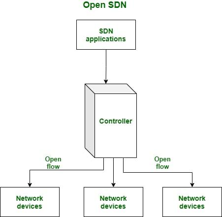

A rede definida por software, ou Software Defined Network (SDN), é uma abordagem inovadora para a gestão das redes de computadores.
Ela desacopla o plano de controle (responsável por tomar as decisões sobre o encaminhamento dos pacotes) do plano de dados (responsável por
encaminhar efetivamente os pacotes). Tradicionalmente, essas funcionalidades estão integradas nos dispositivos de rede, o que torna difícil a
tarefa de gerenciar e controlar o tráfego de dados de forma flexível e eficiente. Com a SDN, o plano de controle é centralizado em um controlador
SDN, que tem visibilidade e controle completos sobre toda a rede. Os dispositivos de rede, chamados de switches, são simplificados e apenas
encaminham pacotes de acordo com as instruções do controlador. Isso permite a programação e configuração da rede de forma dinâmica, através de
interfaces e protocolos abertos. A SDN traz vários benefícios para a gestão das redes, como maior flexibilidade, escalabilidade e agilidade na
implantação de novos serviços e políticas de segurança. Além disso, a centralização do controle facilita a detecção e correção de problemas na
rede, através da análise de dados em tempo real. No entanto, a implementação da SDN também traz desafios, como a segurança dos controladores e a
interoperabilidade entre os dispositivos de rede de diferentes fabricantes. Ainda assim, a SDN tem se mostrado uma solução promissora para
aprimorar a eficiência e o gerenciamento das redes de computadores.
Rede definida por software (SDN) é uma arquitetura de rede que separa o plano de controle do plano de dados em um dispositivo de rede, permitindo o controle central e o gerenciamento dos recursos da rede. Ele permite que os administradores de rede controlem e gerenciem programaticamente a infraestrutura de rede usando aplicativos de software.
Nas redes tradicionais, os dispositivos de rede, como roteadores e switches, são responsáveis pelas funções de controle e encaminhamento de dados. Esta arquitetura fortemente acoplada dificulta o gerenciamento e a configuração da rede como um todo, especialmente em redes de grande escala.
O SDN, por outro lado, introduz um controlador centralizado responsável por tomar decisões sobre como o tráfego de rede deve ser encaminhado. O controlador se comunica com os dispositivos de rede por meio de um protocolo aberto e padronizado como o OpenFlow, permitindo que os administradores definam políticas e regras de rede em um local central.
Os benefícios do SDN incluem maior agilidade da rede, pois os administradores de rede podem configurar, gerenciar e otimizar a rede com mais facilidade por meio de software. Também permite um uso mais eficiente dos recursos da rede, pois o tráfego da rede pode ser roteado dinamicamente com base nas condições e demandas em tempo real. Além disso, o SDN permite a virtualização e a programabilidade da rede, o que pode levar ao desenvolvimento de serviços e aplicações de rede inovadores.
No entanto, a implementação de SDN requer dispositivos de rede que suportem o protocolo OpenFlow ou outros protocolos compatíveis, bem como um controlador centralizado e aplicativos de software para gerenciar e controlar a rede. Também requer um nível de conhecimento em conceitos e tecnologias de rede definidas por software.
No geral, a SDN oferece uma abordagem de rede mais flexível e dinâmica, permitindo que os administradores de rede atendam às crescentes demandas das redes modernas. Ele ganhou força significativa na indústria e está sendo adotado por organizações de todos os tamanhos em vários setores.
Nessa imagem vemos outro exemplo em que o fluxo de dados é controlado por controladores, os chamados Nothbound API e Southbound API
A Northbound API está localizada na parte superior da pilha de SDN e fornece uma maneira padronizada para que aplicativos externos solicitem informações da rede, definam políticas, configurem dispositivos de rede e até mesmo controlem a rede de forma dinâmica.
As Southbound APIs, em contraste com as Northbound APIs, referem-se às interfaces de programação de aplicativos que permitem a comunicação e o controle entre a camada superior de uma infraestrutura de rede definida por software (SDN) e os dispositivos de rede físicos na camada de rede inferior. Essas APIs são usadas para transmitir instruções e políticas do controlador SDN para os elementos de rede, como switches, roteadores, firewalls e outros dispositivos de rede.
Em conclusão, as Redes Definidas por Software (SDN) são uma solução inovadora para as redes de computadores. Elas oferecem
maior flexibilidade, agilidade e escalabilidade, permitindo a separação do controle de rede do plano de dados. Isso resulta em melhor
desempenho, gerenciamento simplificado e redução de custos.
As SDNs também podem melhorar a qualidade de serviço, permitindo a configuração e ajuste dinâmico de políticas de rede. Elas possuem um modelo
de programação abstrato, o que facilita o desenvolvimento de novos serviços e aplicativos.
No entanto, existem desafios na implementação de SDNs, como a necessidade de atualizar a infraestrutura existente e a segurança da rede. Além
disso, a padronização e interoperabilidade entre diferentes fornecedores de hardware e software ainda estão em desenvolvimento.
Apesar desses desafios, as redes definidas por software têm o potencial de revolucionar a forma como as redes são projetadas, implantadas e
gerenciadas. Com seu poder de virtualização e automação, elas podem fornecer uma base sólida para a criação de redes mais flexíveis e
eficientes
1. Open Networking Foundation. (n.d.). Software-Defined Networking (SDN). Retrieved from
https://www.opennetworking.org/sdn-resources/sdn-definition/
This reference provides an overview of Software-Defined Networking (SDN) and
its key concepts. It explains the benefits and advantages of SDN in network management and orchestration.
2. Kreutz, D., Ramos, F. M. V., Verissimo, P. E., Rothenberg, C. E., Azodolmolky, S., & Uhlig, S. (2015). Software-Defined Networking: A
Comprehensive Survey. Proceedings of the IEEE, 103(1), 14-76.
This research paper provides a comprehensive survey of Software-Defined Networking. It covers various aspects of SDN, including its
architecture, components, protocols, and use cases. It also discusses the challenges and future research directions in the field.
3. McKeown, N. (2011). SDN - Software Defined Networks. OpenFlow and SDN: Principles and Practice, 1-68.
This book chapter by Nick McKeown provides an introduction to Software-Defined Networking and its implementation using the OpenFlow protocol.
It explains the concepts behind SDN, its advantages, and the role of OpenFlow in enabling network programmability.
4. Casado, M., Koponen, T., Shenker, S., & Smetters, D. K. (2012). Forwarding Metamorphosis: Fast Programmable Match-Action Processing in
Hardware for SDNs. Proceedings of the ACM Conference on Special Interest Group on Data Communication, 99-110.
This research paper discusses the challenges and solutions for fast and programmable match-action processing in Software-Defined Networking.
It presents the concept of "Match-Action Switches" and the benefits of using them in SDN environments.
5. Gürbüzbalaban, M., & Akkuş, M. İ. (2020). Effect of Software Defined Networking (SDN) to the Performance of the Network. International
Journal of Computer Science and Information Security, 18(2), 27-38.
This research paper explores the impact of Software-Defined Networking on network performance. It presents a performance evaluation study of
SDN by comparing it with traditional network architectures. The findings and analysis provide insights into the advantages and limitations of
SDN in terms of performance.
Note: Please ensure to properly cite any references used in your research to avoid plagiarism.